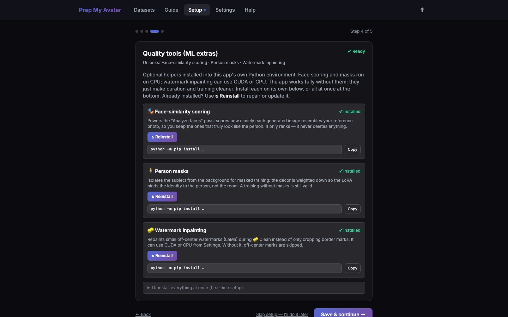

First run · 5 of 21
Step 5: Install quality tools
The optional quality tools add face-similarity scoring, person masks, and watermark inpainting. They help you make decisions; they do not delete images automatically.

Before you begin
These extras support Python 3.11 or 3.12. If the page warns that your Python version is unsupported, skip this step for now. The core workflow still works.
Do this
- On Step 4 of 5 — Quality tools — ML extras, read the three tool cards.
- Select Install only for the tools you want:
- Face-similarity scoring compares a face with your reference.
- Person masks reduce how strongly training learns the background.
- Watermark inpainting can repair some small off-centre watermarks.
- Wait until each selected card says Installed. Use Reinstall only to repair an existing installation.
- Alternatively, expand install everything at once and use Install all (pip).
- Select Save & continue →.
If an installation fails, copy the visible error before leaving the page. You can retry later from Setup.
You are finished when
Every tool you chose says Installed, or you have deliberately skipped all three. The wizard then shows LoRA training — ai-toolkit.